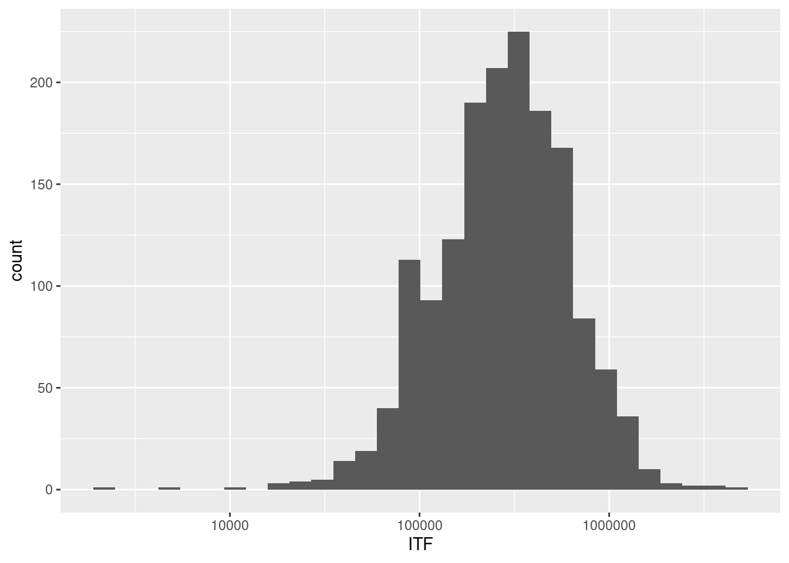
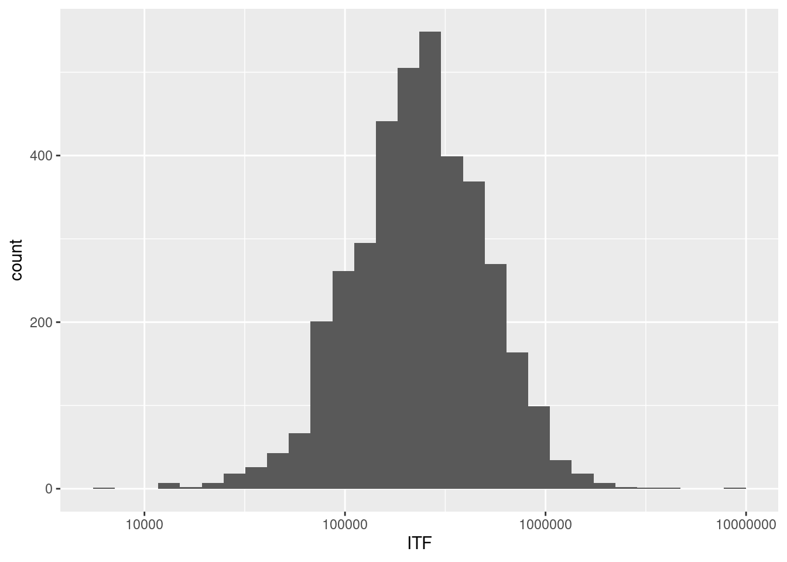

[1] 42 40 1 43 41 443 Distribución del ingreso
3.1 Introducción
Este capítulo se propone analizar, a través de los principales indicadores, la desigualdad económica en Argentina entre los años 2022 y 2023 en las regiones de Gran Buenos Aires, Noroeste, Noreste, Pampeana, Cuyo y Patagonia. Esto se realizará con un análisis cualitativo sobre los datos informados por el Instituto Nacional de Estadística y Censos (2024).
El análisis se centrará en el Ingreso Total Familiar (ITF) como un indicador clave para distinguir las áreas del país donde existen mayores diferencias entre las familias con ingresos altos y aquellas cuyos ingresos se sitúan por debajo de la Canasta Básica Total. Este enfoque permitirá identificar las regiones y sectores más afectados por la desigualdad, proporcionando una visión detallada de cómo se distribuye la riqueza a lo largo del territorio nacional.
3.2 Desarrollo metodológico
3.2.1 Tipo de investigación
Para esta investigación, decidí utilizar un enfoque metodológico cuantitativo con el objetivo de obtener un resultado riguroso del fenómeno de la distribución del ingreso familiar en el país.
El método cuantitativo es, según David Alan Neill y Liliana Cortez Suárez (2018), una forma estructurada de recopilar y analizar datos de diversas fuentes que utiliza computadoras, herramientas estadísticas y matemáticas para producir resultados. Recopila datos numéricos y estadísticos con el objetivo claro de obtener “objetividad” a través de la cuantificación.
3.2.2 Datos
Los datos fueron recopilados de la encuesta permanente de hogares realizada por el Instituto Nacional de Estadística y Censos (INDEC). Pertenecen al 4to trimestre del 2022 y 2023 de todo el país.
3.2.3 Objetivo
Indagar cómo es la distribución del ingreso en las diversas regiones de Argentina durante el lapso de tiempo seleccionado.
3.2.4 Pregunta de investigación
¿Hay diferencias en la distribución de ingresos entre las regiones? De ser así, ¿Cuáles son las que tienen mayor disparidad?
¿Cuanto es la diferencia entre la media de las regiones?
3.2.5 Procedimiento
Para llevar a cabo el análisis procederé a:
Cargar los datos del informe.
A través de la librería tidyverse y utilizando el indicador de Ingreso Total Familiar (ITF), filtrar por regiones.
Generar gráficos para poder visualizar los datos obtenidos.
3.2.6 Herramientas de análisis
Usamos el lenguaje R con los paquetes de tidyverse. (Wickham et al. 2019). Usamos el sistema Quarto (Allaire et al. (2024)) para su publicación.
3.3 Análisis
nrow(temp_df)[1] 2605temp_df$ITF |> # Ingreso Total Familiar
mean()[1] 224668.3temp_df$ITF |> # Ingreso Total Familiar
median()[1] 130000temp_df$ITF |>
range()[1] 0 4340000options(scipen = 999)
temp_df |>
ggplot(aes(ITF))+
geom_histogram()+
scale_x_log10()Warning in scale_x_log10(): log-10 transformation introduced infinite values.`stat_bin()` using `bins = 30`. Pick better value with `binwidth`.Warning: Removed 1015 rows containing non-finite outside the scale range
(`stat_bin()`).
En la región de Gran Buenos Aires más de la mitad de los hogares se encuentra por encima de la media de la ITF por tanto la distribución de la riqueza es dispar. Respecto a la media del Ingreso Total Familiar en los hogares de esta región, este número es de $224668.3
# Filtración de región Noroeste
my_data$REGION |>
unique()[1] 42 40 1 43 41 44temp_df <- my_data |>
filter(REGION == 40) nrow(temp_df)[1] 3102temp_df$ITF |> # Ingreso Total Familiar
mean()[1] 269987temp_df$ITF |> # Ingreso Total Familiar
median()[1] 220000temp_df$ITF |>
range()[1] 0 2100000options(scipen = 999)
temp_df |>
ggplot(aes(ITF))+
geom_histogram()+
scale_x_log10()Warning in scale_x_log10(): log-10 transformation introduced infinite values.`stat_bin()` using `bins = 30`. Pick better value with `binwidth`.Warning: Removed 210 rows containing non-finite outside the scale range
(`stat_bin()`).En la región Noroeste la distribución de la riqueza se encuentra dispar ya que la mayoria de los hogares se encuentra por encima de la media. Respecto a la media del Ingreso Total Familiar en los hogares de esta región, este número es de $269987
# Filtración de región Noreste
my_data$REGION |>
unique()[1] 42 40 1 43 41 44temp_df <- my_data |>
filter(REGION == 41) nrow(temp_df)[1] 1624temp_df$ITF |> # Ingreso Total Familiar
mean()[1] 209483.7temp_df$ITF |> # Ingreso Total Familiar
median()[1] 170000temp_df$ITF |>
range()[1] 0 1920000options(scipen = 999)
temp_df |>
ggplot(aes(ITF))+
geom_histogram()+
scale_x_log10()Warning in scale_x_log10(): log-10 transformation introduced infinite values.`stat_bin()` using `bins = 30`. Pick better value with `binwidth`.Warning: Removed 312 rows containing non-finite outside the scale range
(`stat_bin()`).En éste grafico de la región Noreste se puede observar que hay picos en la cantidad de hogares con ITF mayores a la media pero la brecha no es tan amplia. Respecto a la media del Ingreso Total Familiar en los hogares de esta región, este número es de $209483.7
# Filtración de región Cuyo
my_data$REGION |>
unique()[1] 42 40 1 43 41 44temp_df <- my_data |>
filter(REGION == 42) nrow(temp_df)[1] 1626temp_df$ITF |> # Ingreso Total Familiar
mean()[1] 252978.3temp_df$ITF |> # Ingreso Total Familiar
median()[1] 208900temp_df$ITF |>
range()[1] 0 3048000options(scipen = 999)
temp_df |>
ggplot(aes(ITF))+
geom_histogram()+
scale_x_log10()Warning in scale_x_log10(): log-10 transformation introduced infinite values.`stat_bin()` using `bins = 30`. Pick better value with `binwidth`.Warning: Removed 257 rows containing non-finite outside the scale range
(`stat_bin()`).En éste grafico de la región de Cuyo se puede observar que aunque hay picos en la cantidad de hogares con ITF mayores a la media el grafico se encuentra nivelado. Respecto a la media del Ingreso Total Familiar en los hogares de esta región, este número es de $252978.3
# Filtración de región Pampeana
my_data$REGION |>
unique()[1] 42 40 1 43 41 44temp_df <- my_data |>
filter(REGION == 43) nrow(temp_df)[1] 5524temp_df$ITF |> # Ingreso Total Familiar
mean()[1] 211733.7temp_df$ITF |> # Ingreso Total Familiar
median()[1] 150000temp_df$ITF |>
range()[1] 0 8410000options(scipen = 999)
temp_df |>
ggplot(aes(ITF))+
geom_histogram()+
scale_x_log10()Warning in scale_x_log10(): log-10 transformation introduced infinite values.`stat_bin()` using `bins = 30`. Pick better value with `binwidth`.Warning: Removed 1736 rows containing non-finite outside the scale range
(`stat_bin()`).
En éste grafico de la región Pampeana se puede observar que la mayor cantidad de hogares se concentra por encima de la media de ITF. Respecto a la media del Ingreso Total Familiar en los hogares de esta región, este número es de $211733.7
# Filtración de región Patagonica
my_data$REGION |>
unique()[1] 42 40 1 43 41 44temp_df <- my_data |>
filter(REGION == 44) nrow(temp_df)[1] 2175temp_df$ITF |> # Ingreso Total Familiar
mean()[1] 343434.3temp_df$ITF |> # Ingreso Total Familiar
median()[1] 289000temp_df$ITF |>
range()[1] 0 3600000options(scipen = 999)
temp_df |>
ggplot(aes(ITF))+
geom_histogram()+
scale_x_log10()Warning in scale_x_log10(): log-10 transformation introduced infinite values.`stat_bin()` using `bins = 30`. Pick better value with `binwidth`.Warning: Removed 320 rows containing non-finite outside the scale range
(`stat_bin()`).En éste grafico de la región Patagonica se puede observar que la mayor cantidad de hogares se encuentra superior a la media de ITF. Respecto a la media del Ingreso Total Familiar en los hogares de esta región, este número es de $343434.3
temp_df <- my_data |>
mutate(REGION2 =
case_when(
REGION == 1 ~ "GBA",
REGION == 40 ~ "Noroeste",
REGION == 41 ~ "Noreste",
REGION == 42 ~ "Cuyo",
REGION == 43 ~ "Pampeana",
REGION == 44 ~ "Patagonia"))temp_df |>
group_by(REGION2) |>
summarise(
MEDIA = mean(ITF),
MEDIANA = median(ITF)
)# A tibble: 6 × 3
REGION2 MEDIA MEDIANA
<chr> <dbl> <dbl>
1 Cuyo 252978. 208900
2 GBA 224668. 130000
3 Noreste 209484. 170000
4 Noroeste 269987. 220000
5 Pampeana 211734. 150000
6 Patagonia 343434. 289000temp_df %>%
group_by(REGION2) %>%
summarize(
ITF = mean(ITF)
) |>
ggplot(aes(x=REGION2,y=ITF, fill = REGION2))+
geom_col()3.4 Conclusiones
Pudimos observar que si existe una amplia diferencia entre las diversas regiones del país, especialmente entre la región de la Patagonia y la región Noreste. La Patagonia se destaca por tener los índices de ITF (Ingreso Total Familiar) más altos, mientras que la región Noreste se encuentra en el extremo opuesto, ocupando el lugar más bajo en cuanto a este indicador. Estas diferencias en el ITF tiene profundas implicaciones para la calidad de vida de los habitantes de cada región. En la Patagonia, los altos ingresos permiten un mayor acceso a bienes y servicios, mejor educación y atención sanitaria, y una mayor estabilidad económica. Por otro lado, en la región Noreste, los ingresos más bajos pueden limitar el acceso a estos mismos beneficios, afectando el bienestar general de las familias.
Por otro lado pudimos encontrar que las medias varían en más de 100000$ entre las regiones. Las regiones del Noreste (209483.7) y la Pampeana (211733.7) son las que menores valores tienen. Seguidas por el AMBA (224668.3), Cuyo (252978.3) y Noroeste (269987). Despegado ampliamente se ubica la region Patagonica (343434.3).